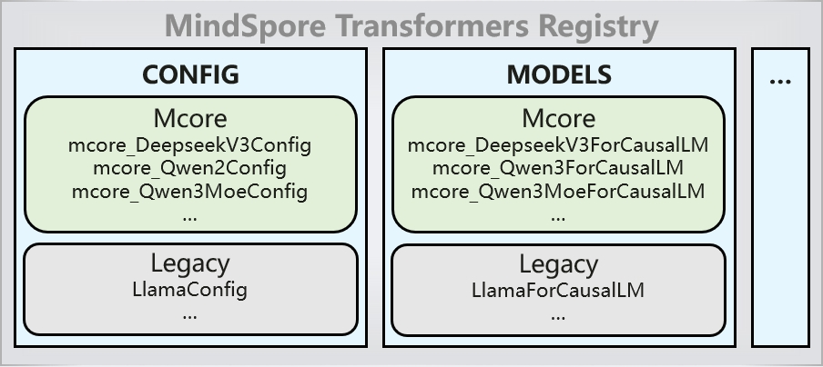

已废弃（Deprecated）
本页属于 静态图（GRAPH_MODE）实现 章节，已标记为废弃。新特性优先在「r2.0.0 动态图实现」章节演进，请优先查阅动态图相关文档。
服务化部署指南

vLLM服务化部署
概述
vLLM-MindSpore插件以将MindSpore大模型接入vLLM，并实现服务化部署为功能目标: vLLM-MindSpore插件简介。
MindSpore Transformers 套件的目标是构建一个大模型预训练、微调、评测、推理、部署的全流程开发套件，提供业内主流的 Transformer 类大语言模型（Large Language Models, LLMs）和多模态理解模型（Multimodal Models, MMs）。
环境搭建
环境安装步骤分为两种安装方式：
快速开始
用户在环境部署完毕后，在运行模型前，需要准备模型文件，用户可通过模型下载章节的指引作模型准备，在环境变量设置后，可采用离线推理或在线服务的方式。
环境变量
用户在拉起模型前，需设置以下环境变量：
export vLLM_MODEL_BACKEND=MindFormers # use MindSpore Transformers
export MINDFORMERS_MODEL_CONFIG=/path/to/yaml # 非MCore模型需要
目前vLLM MindSpore可支持不同的模型后端，以上环境变量指定MindSpore Transformers 作为对接模型套件。非MCore模型需要配置模型的yaml配置文件。 更多环境变量可参考：环境变量。
准备好模型和环境变量后，即可开始推理。
在线推理
vLLM在线推理面向实时服务场景，依托动态批处理和 OpenAI API，具有高并发、高吞吐、低延迟的特点，适用于企业级应用。
离线推理
vLLM的离线推理专为高效处理大规模批量请求而设计，尤其适用于非实时，数据密集型的模型推理场景。
离线推理流程请参照：离线推理
Mcore模型适配
vLLM MindSpore支持多种模型套件库，当其模型套件为 MindSpore Transformers 时，注册在 MindSpore Transformers 中的注册表的 Mcore 模型默认可直接通过 vLLM 实现服务化部署，借助 MindSpore Transformers 的 AutoModel 接口实现的。
其原理是，在 vLLM 的模型注册表中，所有的 MindSpore Transformers 的模型统一注册为MindFormersForCausalLM类，然后走 MindSpore Transformers 模型的加载逻辑。在 MindSpore Transformers 界面，所有的 Mcore 的模型配置和模型在加载mindformers组件时已自动注册至注册表中，在加载模型的逻辑中，通过模型的config.json配置文件中的model_type或architectures实现在注册表中的模型或模型文件的检索，进而完成模型的配置实例化和模型的加载。
vLLM MindSpore 模型注册表中，只注册MindFormersForCausalLM类：
MindSpore Transformers模型注册表中，注册模型配置类和模型类等：

如果有涉及配置修改，可以参照 配置 文件。参照已有的映射关系，可将 vLLM 的 CLI 参数经过转换后，在模型侧生效。
附录
版本配套信息
各个组件的配套相关信息详见：版本配套。
模型支持列表
模型 |
Mcore新架构 |
状态 |
下载链接 |
|---|---|---|---|
Qwen3-32B |
是 |
已支持 |
|
Qwen3-235B-A22B |
是 |
已支持 |
|
Qwen3 |
是 |
测试中 |
|
Qwen3-MOE |
是 |
测试中 |
|
DeepSeek-V3 |
是 |
测试中 |
|
Qwen2.5 |
否 |
已支持 |
Qwen2.5-0.5B-Instruct、 Qwen2.5-1.5B-Instruct、 Qwen2.5-3B-Instruct、 Qwen2.5-7B-Instruct、 Qwen2.5-14B-Instruct、 Qwen2.5-32B-Instruct、 Qwen2.5-72B-Instruct |
MindIE服务化部署
MindIE介绍
MindIE，全称Mind Inference Engine，是基于昇腾硬件的高性能推理框架。详情参考官方介绍文档。
MindSpore Transformers承载在模型应用层MindIE LLM中，通过MindIE Service可以部署MindSpore Transformers中的大模型。
MindIE推理的模型支持度可参考模型库。
环境搭建
软件安装
安装MindSpore Transformers
参考MindSpore Transformers官方安装指南进行安装。
安装MindIE
参考MindIE安装依赖文档完成依赖安装。之后前往MindIE资源下载中心下载软件包进行安装。
MindIE与CANN版本必须配套使用，其版本配套关系如下所示。
MindIE
CANN-toolkit
CANN-kernels
环境变量
若安装路径为默认路径，可以运行以下命令初始化各组件环境变量。
# Ascend
source /usr/local/Ascend/ascend-toolkit/set_env.sh
# MindIE
source /usr/local/Ascend/mindie/latest/mindie-llm/set_env.sh
source /usr/local/Ascend/mindie/latest/mindie-service/set_env.sh
# MindSpore
export LCAL_IF_PORT=8129
# 组网配置
export MS_SCHED_HOST=127.0.0.1 # scheduler节点ip地址
export MS_SCHED_PORT=8090 # scheduler节点服务端口
若机器上有其他卡已启动MindIE，需要注意
MS_SCHED_PORT参数是否冲突。日志打印中该参数报错的话，替换为其他端口号重新尝试即可。
推理服务部署基本流程
准备模型文件
创建一个文件夹，用于存放MindIE后端的指定模型相关文件，如模型tokenizer文件、yaml配置文件和config文件等。
mkdir -p mf_model/qwen1_5_72b
以Qwen1.5-72B为例，文件夹目录结构如下：
mf_model
└── qwen1_5_72b
├── config.json # 模型json配置文件，Hugging Face上对应模型下载
├── vocab.json # 模型vocab文件，Hugging Face上对应模型下载
├── merges.txt # 模型merges文件，Hugging Face上对应模型下载
├── predict_qwen1_5_72b.yaml # 模型yaml配置文件
├── qwen1_5_tokenizer.py # 模型tokenizer文件，从MindSpore Transformers仓中research目录下找到对应模型复制
└── qwen1_5_72b_ckpt_dir # 模型分布式权重文件夹
predict_qwen1_5_72b.yaml需要关注以下配置：
load_checkpoint: '/mf_model/qwen1_5_72b/qwen1_5_72b_ckpt_dir' # 为存放模型分布式权重文件夹路径
use_parallel: True
auto_trans_ckpt: False # 是否开启自动权重转换，离线切分设置为False
parallel_config:
data_parallel: 1
model_parallel: 4 # 多卡推理配置模型切分，一般与使用卡数一致
pipeline_parallel: 1
processor:
tokenizer:
vocab_file: "/path/to/mf_model/qwen1_5_72b/vocab.json" # vocab文件绝对路径
merges_file: "/path/to/mf_model/qwen1_5_72b/merges.txt" # merges文件绝对路径
模型权重下载和转换可参考 权重格式转换指南。
不同模型的所需文件和配置可能会有差异，详情参考模型库中具体模型的推理章节。
启动MindIE
1. 一键启动（推荐）
MindSpore Transformers仓上提供一键拉起MindIE脚本，脚本中已预置环境变量设置和服务化配置，仅需输入模型文件目录后即可快速拉起服务。
进入scripts目录下，执行MindIE启动脚本：
cd ./scripts
bash run_mindie.sh --model-name xxx --model-path /path/to/model
# 参数说明
--model-name: 必传，设置MindIE后端名称
--model-path: 必传，设置模型文件夹路径，如/path/to/mf_model/qwen1_5_72b
--help : 脚本使用说明
--max-seq-len: 最大序列长度。默认值：2560。
--max-iter-times: 模型全局最大输出长度。默认值：512。
--max-input-token-len: 输入token id最大长度。默认值：2048。
--truncation: 是否进行参数合理化校验拦截。false：校验，true：不校验。默认值：false。
--world-size: 启用几张卡推理。多机推理场景下该值无效，worldSize根据ranktable计算获得。默认值：4。
--template-type: 推理类型。Standard：PD混部场景，Prefill请求和Decode请求各自组batch。Mix：Splitfuse特性相关参数，Prefill请求和Decode请求可以一起组batch。PD分离场景下该字段配置不生效。默认值："Standard"。
--max-preempt-count: 每一批次最大可抢占请求的上限，即限制一轮调度最多抢占请求的数量，最大上限为maxBatchSize，取值大于0则表示开启可抢占功能。默认值：0。
--support-select-batch: batch选择策略。PD分离场景下该字段不生效。false：表示每一轮调度时，优先调度和执行Prefill阶段的请求。true：表示每一轮调度时，根据当前Prefill与Decode请求的数量，自适应调整Prefill和Decode阶段请求调度和执行的先后顺序。默认值：false。
--npu-mem-size: 单个NPU中可以用来申请KV Cache的size上限。默认值：-1。
--max-prefill-batch-size: 最大prefill batch size。默认值：50。
--ip: EndPoint提供的业务面RESTful接口绑定的IP地址。默认值："127.0.0.1"。
--port: EndPoint提供的业务面RESTful接口绑定的端口号。默认值：1025。
--management-ip: EndPoint提供的管理面RESTful接口绑定的IP地址。默认值："127.0.0.2"。
--management-port: EndPoint提供的管理面（管理面接口请参见表1）接口绑定的端口号。默认值：1026。
--metrics-port: 服务管控指标接口（普罗格式）端口号。默认值：1027。
--ms-sched-host: scheduler节点ip地址。默认值：127.0.0.1。
--ms-sched-port: scheduler节点服务端口。默认值：8090。
查看日志：
tail -f output.log
当log日志中出现Daemon start success!，表示服务启动成功。
脚本参数
参数 |
参数说明 |
取值说明 |
|---|---|---|
|
设置MindIE 服务后端模型命名。 |
str，必选。 |
|
设置MindIE 服务后端模型路径，包含必要文件如yaml/config.json/tokenizer/vocab等。 |
str，必选。 |
|
EndPoint提供的业务面RESTful接口绑定的IP地址。 |
str，可选。默认值：”127.0.0.1” |
|
EndPoint提供的业务面RESTful接口绑定的端口号。 |
int，可选。默认值：1025 |
|
EndPoint提供的管理面RESTful接口绑定的IP地址。 |
str，可选。默认值：”127.0.0.2” |
|
EndPoint提供的管理面RESTful接口绑定的端口号。 |
int，可选。默认值：1026 |
|
服务监控指标接口（普罗格式）端口号。 |
int，可选。默认值：1027 |
|
最大序列长度。 |
int，可选。默认值：2560 |
|
模型全局最大输出长度。与请求级最大输出token个数max_tokens（或max_new_tokens）取较小值作为最大可生成长度。 |
int，可选。默认值：512 |
|
输入token id最大长度。 |
int，可选。默认值：2048 |
|
每次Prefill时，当前batch中所有input token总数，不能超过maxPrefillTokens。 |
int，可选。默认值：8192 |
|
是否进行参数合理化校验拦截。 |
bool，可选。默认值：false |
|
推理类型。 |
str，可选。默认值：”Standard”。 |
|
每一批次最大可抢占请求的上限。 |
int，可选。默认值：0 |
|
batch选择策略。 |
bool，可选。默认值：false |
|
单个NPU中可以用来申请KV Cache的size上限。 |
int，可选。默认值：50 |
|
最大prefill batch size。 |
int，可选。默认值：50 |
|
启用的推理卡数。默认不设置，以yaml中配置的parallel_config为准；设置后将覆盖yaml中并行配置中的model_parallel参数。 |
str，可选。 |
|
MindSpore scheduler节点ip地址。 |
str，可选。默认值：”127.0.0.1” |
|
MindSpore scheduler节点服务端口。 |
int，可选。默认值：8119 |
|
展示脚本入参介绍。 |
str，可选。 |
2. 自定义启动
MindIE安装路径均为默认路径/usr/local/Ascend/.。如自定义安装路径，需同步修改以下例子中的路径。
打开mindie-service目录中的config.json，修改server相关配置。
vim /usr/local/Ascend/mindie/latest/mindie-service/conf/config.json
其中modelWeightPath和backendType必须修改配置为：
"modelWeightPath": "/path/to/mf_model/qwen1_5_72b"
"backendType": "ms"
modelWeightPath为上一步创建出的模型文件夹，放置模型和tokenizer等相关文件；backendType后端启动方式必须为ms。
其他相关参数如下：
可选配置项 |
取值类型 |
取值范围 |
配置说明 |
|---|---|---|---|
httpsEnabled |
Bool |
True/False |
是否开启HTTPS通信安全认证，默认为True。便于启动，建议设置为False。 |
maxSeqLen |
int32 |
按用户需求自定义，>0 |
最大序列长度。输入的长度+输出的长度<=maxSeqLen，用户根据自己的推理场景选择maxSeqLen。 |
npuDeviceIds |
list |
按模型需求自定义 |
此配置项暂不生效。实际运行的卡由可见卡环境变量和worldSize配置控制。可见卡需调整资源参考CANN环境变量。 |
worldSize |
int32 |
按模型需求自定义 |
可见卡的使用卡数。例：ASCEND_RT_VISIBLE_DEVICES=4,0,1,2且worldSize=2，则取第4，0卡运行。 |
npuMemSize |
int32 |
按显存自定义 |
NPU中可以用来申请KVCache的size上限（GB），可按部署模型的实际大小计算得出：npuMemSize=(总空闲-权重/mp数量)*系数，其中系数取0.8。建议值：8。 |
cpuMemSize |
int32 |
按内存自定义 |
CPU中可以用来申请KVCache的size上限（GB），和swap功能有关，cpuMemSize不足时会将Cache释放进行重计算。建议值：5。 |
maxPrefillBatchSize |
int32 |
[1, maxBatchSize] |
最大prefill batch size。maxPrefillBatchSize和maxPrefillTokens谁先达到各自的取值就完成本次组batch。该参数主要是在明确需要限制prefill阶段batch size的场景下使用，否则可以设置为0（此时引擎将默认取maxBatchSize值）或与maxBatchSize值相同。必填，默认值：50。 |
maxPrefillTokens |
int32 |
[5120, 409600] |
每次prefill时，当前batch中所有input token总数，不能超过maxPrefillTokens。maxPrefillTokens和maxPrefillBatchSize谁先达到各自的取值就完成本次组batch。必填，默认值：8192。 |
maxBatchSize |
int32 |
[1, 5000] |
最大decode batch size，根据模型规模和NPU显存估算得出。 |
maxIterTimes |
int32 |
[1, maxSeqLen-1] |
可以进行的decode次数，即一句话最大可生成长度。请求级别里面有一个max_output_length参数，maxIterTimes是一个全局设置，与max_output_length取小作为最终output的最长length。 |
全量配置参数可查阅 MindIE Service开发指南-快速开始-配置参数说明。
运行启动脚本：
cd /path/to/mindie/latest/mindie-service
nohup ./bin/mindieservice_daemon > output.log 2>&1 &
tail -f output.log
当log日志中出现Daemon start success!，表示服务启动成功。
Python相关日志：
export MINDIE_LLM_PYTHON_LOG_TO_FILE=1
export MINDIE_LLM_PYTHON_LOG_PATH=/usr/local/Ascend/mindie/latest/mindie-service/logs/pythonlog.log
tail -f /usr/local/Ascend/mindie/latest/mindie-service/logs/pythonlog.log
MindIE服务化部署及推理示例
以下例子各组件安装路径均为默认路径/usr/local/Ascend/.，模型使用Qwen1.5-72B。
准备模型文件
以Qwen1.5-72B为例，准备模型文件目录。目录结构及配置详情可参考准备模型文件：
mkdir -p mf_model/qwen1_5_72b
启动MindIE
1. 一键启动（推荐）
进入scripts目录下，执行mindie启动脚本：
cd ./scripts
bash run_mindie.sh --model-name qwen1_5_72b --model-path /path/to/mf_model/qwen1_5_72b
查看日志：
tail -f output.log
当log日志中出现Daemon start success!，表示服务启动成功。
2. 自定义启动
打开mindie-service目录中的config.json，修改server相关配置。
vim /usr/local/Ascend/mindie/latest/mindie-service/conf/config.json
修改完后的config.json如下：
{
"Version" : "1.0.0",
"LogConfig" :
{
"logLevel" : "Info",
"logFileSize" : 20,
"logFileNum" : 20,
"logPath" : "logs/mindservice.log"
},
"ServerConfig" :
{
"ipAddress" : "127.0.0.1",
"managementIpAddress" : "127.0.0.2",
"port" : 1025,
"managementPort" : 1026,
"metricsPort" : 1027,
"allowAllZeroIpListening" : false,
"maxLinkNum" : 1000,
"httpsEnabled" : false,
"fullTextEnabled" : false,
"tlsCaPath" : "security/ca/",
"tlsCaFile" : ["ca.pem"],
"tlsCert" : "security/certs/server.pem",
"tlsPk" : "security/keys/server.key.pem",
"tlsPkPwd" : "security/pass/key_pwd.txt",
"tlsCrl" : "security/certs/server_crl.pem",
"managementTlsCaFile" : ["management_ca.pem"],
"managementTlsCert" : "security/certs/management/server.pem",
"managementTlsPk" : "security/keys/management/server.key.pem",
"managementTlsPkPwd" : "security/pass/management/key_pwd.txt",
"managementTlsCrl" : "security/certs/management/server_crl.pem",
"kmcKsfMaster" : "tools/pmt/master/ksfa",
"kmcKsfStandby" : "tools/pmt/standby/ksfb",
"inferMode" : "standard",
"interCommTLSEnabled" : false,
"interCommPort" : 1121,
"interCommTlsCaFile" : "security/grpc/ca/ca.pem",
"interCommTlsCert" : "security/grpc/certs/server.pem",
"interCommPk" : "security/grpc/keys/server.key.pem",
"interCommPkPwd" : "security/grpc/pass/key_pwd.txt",
"interCommTlsCrl" : "security/certs/server_crl.pem",
"openAiSupport" : "vllm"
},
"BackendConfig" : {
"backendName" : "mindieservice_llm_engine",
"modelInstanceNumber" : 1,
"npuDeviceIds" : [[0,1,2,3]],
"tokenizerProcessNumber" : 8,
"multiNodesInferEnabled" : false,
"multiNodesInferPort" : 1120,
"interNodeTLSEnabled" : true,
"interNodeTlsCaFile" : "security/grpc/ca/ca.pem",
"interNodeTlsCert" : "security/grpc/certs/server.pem",
"interNodeTlsPk" : "security/grpc/keys/server.key.pem",
"interNodeTlsPkPwd" : "security/grpc/pass/mindie_server_key_pwd.txt",
"interNodeTlsCrl" : "security/grpc/certs/server_crl.pem",
"interNodeKmcKsfMaster" : "tools/pmt/master/ksfa",
"interNodeKmcKsfStandby" : "tools/pmt/standby/ksfb",
"ModelDeployConfig" :
{
"maxSeqLen" : 8192,
"maxInputTokenLen" : 8192,
"truncation" : false,
"ModelConfig" : [
{
"modelInstanceType" : "Standard",
"modelName" : "Qwen1.5-72B-Chat",
"modelWeightPath" : "/mf_model/qwen1_5_72b",
"worldSize" : 4,
"cpuMemSize" : 15,
"npuMemSize" : 15,
"backendType" : "ms"
}
]
},
"ScheduleConfig" :
{
"templateType" : "Standard",
"templateName" : "Standard_LLM",
"cacheBlockSize" : 128,
"maxPrefillBatchSize" : 50,
"maxPrefillTokens" : 8192,
"prefillTimeMsPerReq" : 150,
"prefillPolicyType" : 0,
"decodeTimeMsPerReq" : 50,
"decodePolicyType" : 0,
"maxBatchSize" : 200,
"maxIterTimes" : 4096,
"maxPreemptCount" : 0,
"supportSelectBatch" : false,
"maxQueueDelayMicroseconds" : 5000
}
}
}
为便于测试，
httpsEnabled参数设置为false，忽略后续https通信相关参数。
进入mindie-service目录启动服务：
cd /usr/local/Ascend/mindie/1.0.RC3/mindie-service
nohup ./bin/mindieservice_daemon > output.log 2>&1 &
tail -f output.log
打印如下信息，启动成功。
Daemon start success!
请求测试
服务启动成功后，可使用curl命令发送请求验证，样例如下：
curl -w "\ntime_total=%{time_total}\n" -H "Accept: application/json" -H "Content-type: application/json" -X POST -d '{"inputs": "I love Beijing, because","stream": false}' http://127.0.0.1:1025/generate
返回推理结果，验证成功：
{"generated_text":" it is a city with a long history and rich culture....."}
模型列表
其他模型的MindIE推理示例可参考模型库中各模型的介绍文档。